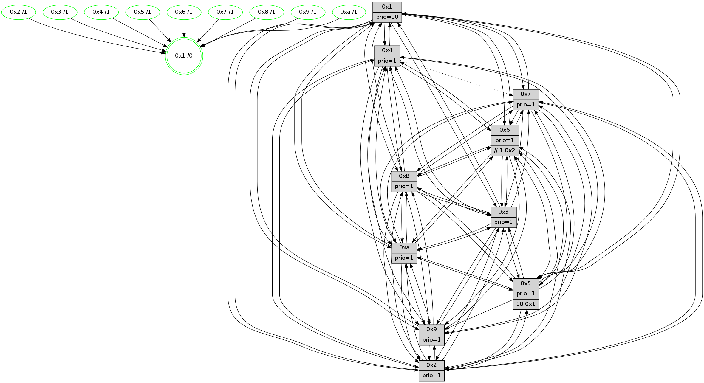

>> << IDX [start] -100 -25 -5 +0 +5 +25 +100 [1480.53855705]
 Previous packets
----------------------------------------------------------------------
1475.021642 beacon01(faad) #0 coord=01,02,03,04,05,06,07,0a,09,08 cycle=688.0ms assoc
-- color-indic=1 64 14 c1
1475.031623 beacon02(faad) #0 coord=01,02,03,04,05,06,07,0a,09,08 cycle=688.0ms assoc 64 87 f0
1475.041625 beacon03(faad) #0 coord=01,02,03,04,05,06,07,0a,09,08 cycle=688.0ms assoc 64 fd bd
1475.051625 beacon04(faad) #0 coord=01,02,03,04,05,06,07,0a,09,08 cycle=688.0ms assoc 64 8a 57
1475.061626 beacon05(faad) #0 coord=01,02,03,04,05,06,07,0a,09,08 cycle=688.0ms assoc 64 f0 1a
1475.071626 beacon06(faad) #0 coord=01,02,03,04,05,06,07,0a,09,08 cycle=688.0ms assoc 64 7e cd
1475.081626 beacon07(faad) #0 coord=01,02,03,04,05,06,07,0a,09,08 cycle=688.0ms assoc 64 04 80
1475.091631 beacon0a(faad) #0 coord=01,02,03,04,05,06,07,0a,09,08 cycle=688.0ms assoc 64 75 8b
1475.111630 beacon08(faad) #0 coord=01,02,03,04,05,06,07,0a,09,08 cycle=688.0ms assoc 64 81 11
1475.124443 [Hello(10): seq=873 sym=6,2,3,8,7,5,9,4,1 sysInfo=hasWarning stat=6:8,2,8,5/2:5,8,10,1/3:9,13,0,15/8:1,13,10,5/7:10,5,7,10/5:12,12,3,3/9:3,5,7,1/4:12,9,4,3/1:13,4,1,1]
1475.127809 [STC(1) #0.259 tree-change,inconsistent-stability,stable,to-color d=0]
1475.129152 [Hello(4): seq=940 sym=5,8,6,2,3,9,7,10,1 sysInfo= stat=5:5,13,0,4/8:2,6,1,0/6:13,7,11,2/2:11,8,3,2/3:12,3,10,0/9:13,12,5,2/7:5,12,2,0/10:2,3,12,14/1:5,0,3,1]
1475.134042 [Color(1) seq=620 @0:0 prio=10]
1475.135730 [Hello(9): seq=884 sym=2,5,3,4,7,6,8,10,1 sysInfo=hasWarning stat=2:12,9,7,12/5:10,14,9,10/3:9,14,4,6/4:7,8,0,3/7:5,0,0,5/6:8,11,6,1/8:6,0,0,8/10:7,9,2,0/1:13,2,2,1]
1475.144205 [Hello(7): seq=940 sym=2,3,5,6,9,10,1 sysInfo=hasWarning stat=2:2,4,2,5/3:11,13,3,5/5:10,14,4,5/6:13,10,2,13/9:1,12,15,2/10:4,11,9,7/1:3,8,14,0]
1475.148375 [Color(7) seq=468 @0:0 prio=1]
1475.149979 [Color(4) seq=479 @0:0 prio=1]
1475.151268 [Hello(8): seq=884 sym=5,2,3,9,6,4,10,1 asym=7 sysInfo=hasWarning stat=5:6,1,14,3/2:13,15,9,13/3:8,1,13,5/9:12,3,15,5/6:15,0,9,1/4:3,7,6,2/10:14,3,6,5/1:11,5,3,0/7:6,15,1,0]
1475.156409 [Color(8) seq=539 @0:0 prio=1]
----------------------------------------------------------------------
1475.809773 beacon01(faad) #0 coord=01,02,03,04,05,06,07,0a,09,08 cycle=688.0ms assoc
-- color-indic=1 64 d0 cf
1475.819755 beacon02(faad) #0 coord=01,02,03,04,05,06,07,0a,09,08 cycle=688.0ms assoc 64 43 fe
1475.829754 beacon03(faad) #0 coord=01,02,03,04,05,06,07,0a,09,08 cycle=688.0ms assoc 64 39 b3
1475.839755 beacon04(faad) #0 coord=01,02,03,04,05,06,07,0a,09,08 cycle=688.0ms assoc 64 4e 59
1475.849755 beacon05(faad) #0 coord=01,02,03,04,05,06,07,0a,09,08 cycle=688.0ms assoc 64 34 14
1475.859756 beacon06(faad) #0 coord=01,02,03,04,05,06,07,0a,09,08 cycle=688.0ms assoc 64 ba c3
1475.869756 beacon07(faad) #0 coord=01,02,03,04,05,06,07,0a,09,08 cycle=688.0ms assoc 64 c0 8e
1475.879760 beacon0a(faad) #0 coord=01,02,03,04,05,06,07,0a,09,08 cycle=688.0ms assoc 64 b1 85
1475.899760 beacon08(faad) #0 coord=01,02,03,04,05,06,07,0a,09,08 cycle=688.0ms assoc 64 45 1f
1475.912631 [Hello(1): seq=850 sym=4,2,9,5,10,3,8,6,7 sym= sysInfo=coloring-mode-on,ColoringModeRequestCalled stat=]
1475.915349 [STC(10)->1 #0.259 tree-change,inconsistent-stability,stable,to-color d=1]
1475.918517 [STC(5)->1 #0.259 tree-change,inconsistent-stability,stable,to-color d=1]
1475.919874 [Hello(2): seq=937 sym=4,5,7,6,3,9,8,10,1 sysInfo=hasWarning stat=4:8,2,2,14/5:13,8,7,4/7:8,1,4,2/6:0,1,1,0/3:15,14,6,2/9:7,2,12,10/8:5,15,13,14/10:6,12,14,11/1:4,11,15,0]
1475.922512 [Color(5) seq=477 @0:0 prio=1 >10.@1,1.@2,1.@3,1.@4]
1475.924317 [Hello(3): seq=941 sym=1,7,6,2,4,8,9,10,5 sysInfo=hasWarning stat=1:10,7,7,0/7:8,15,6,15/6:7,11,10,3/2:0,1,0,0/4:14,6,9,14/8:0,15,14,7/9:6,15,15,1/10:5,9,5,5/5:2,9,3,3]
1475.927136 [STC(3)->1 #0.259 tree-change,inconsistent-stability,stable,to-color d=1]
1475.929516 [Color(9) seq=500 @0:0 prio=1]
1475.931020 [Color(3) seq=570 @0:0 prio=1]
1475.933013 [Hello(6): seq=941 sym=3,2,5,4,7,9,8,10,1 sysInfo=hasWarning stat=3:12,11,7,0/2:5,8,2,0/5:1,2,11,6/4:9,14,2,9/7:3,2,14,0/9:12,3,3,11/8:10,8,9,8/10:13,9,13,13/1:13,12,4,1]
1475.935835 [STC(6)->1 #0.259 tree-change,inconsistent-stability,stable,to-color d=1]
1475.937800 [Color(6) seq=573 @0:0 prio=1 >>1.@2,1.@3,1.@4]
1475.942948 [STC(2)->1 #0.259 tree-change,inconsistent-stability,stable,to-color d=1]
1475.944889 [Color(2) seq=517 @0:0 prio=1]
1475.946852 [Color(10) seq=530 @0:0 prio=1]
----------------------------------------------------------------------
1476.597903 beacon01(faad) #0 coord=01,02,03,04,05,06,07,0a,09,08 cycle=688.0ms assoc
-- color-indic=1 64 6c ca
1476.607884 beacon02(faad) #0 coord=01,02,03,04,05,06,07,0a,09,08 cycle=688.0ms assoc 64 ff fb
1476.617885 beacon03(faad) #0 coord=01,02,03,04,05,06,07,0a,09,08 cycle=688.0ms assoc 64 85 b6
1476.627885 beacon04(faad) #0 coord=01,02,03,04,05,06,07,0a,09,08 cycle=688.0ms assoc 64 f2 5c
1476.637886 beacon05(faad) #0 coord=01,02,03,04,05,06,07,0a,09,08 cycle=688.0ms assoc 64 88 11
1476.647888 beacon06(faad) #0 coord=01,02,03,04,05,06,07,0a,09,08 cycle=688.0ms assoc 64 06 c6
1476.657886 beacon07(faad) #0 coord=01,02,03,04,05,06,07,0a,09,08 cycle=688.0ms assoc 64 7c 8b
1476.667891 beacon0a(faad) #0 coord=01,02,03,04,05,06,07,0a,09,08 cycle=688.0ms assoc 64 0d 80
1476.687892 beacon08(faad) #0 coord=01,02,03,04,05,06,07,0a,09,08 cycle=688.0ms assoc 64 f9 1a
1476.699762 [Hello(10): seq=874 sym=6,2,3,8,7,5,9,4,1 sysInfo=hasWarning stat=6:8,2,8,5/2:5,8,10,1/3:9,13,0,15/8:2,14,10,5/7:11,6,7,10/5:12,12,3,3/9:4,5,7,1/4:13,10,4,3/1:14,5,2,1]
1476.703698 [Hello(9): seq=885 sym=2,5,3,4,7,6,8,10,1 sysInfo=hasWarning stat=2:12,10,8,12/5:10,14,9,10/3:9,15,4,6/4:7,9,0,3/7:6,1,0,5/6:9,12,7,1/8:7,1,0,8/10:7,10,2,0/1:14,2,2,1]
1476.706206 [Hello(8): seq=885 sym=5,2,3,9,6,4,10,1 asym=7 sysInfo=hasWarning stat=5:6,2,15,3/2:14,0,10,13/3:9,2,14,5/9:12,4,15,5/6:0,1,10,1/4:3,7,6,2/10:15,4,7,5/1:12,5,3,0/7:6,15,1,0]
1476.708902 [Color(1) seq=621 @0:0 prio=10]
1476.711346 [Color(8) seq=540 @0:0 prio=1]
1476.713393 [Hello(4): seq=941 sym=5,8,6,2,3,9,7,10,1 sysInfo= stat=5:5,14,1,4/8:3,7,1,0/6:14,8,12,2/2:12,9,4,2/3:13,4,11,0/9:13,13,5,2/7:5,12,2,0/10:3,4,13,14/1:6,0,3,1]
1476.716152 [Hello(7): seq=941 sym=2,3,5,6,8,9,10,1 sysInfo=hasWarning stat=2:3,5,3,5/3:12,14,4,5/5:10,15,5,5/6:14,11,3,13/8:0,1,0,0/9:1,13,15,2/10:5,12,10,7/1:4,8,14,0]
1476.719473 [Color(7) seq=469 @0:0 prio=1]
1476.722758 [Color(4) seq=480 @0:0 prio=1]
----------------------------------------------------------------------
1477.386036 beacon01(faad) #0 coord=01,02,03,04,05,06,07,0a,09,08 cycle=688.0ms assoc
-- color-indic=1 64 58 d2
1477.396018 beacon02(faad) #0 coord=01,02,03,04,05,06,07,0a,09,08 cycle=688.0ms assoc 64 cb e3
1477.406020 beacon03(faad) #0 coord=01,02,03,04,05,06,07,0a,09,08 cycle=688.0ms assoc 64 b1 ae
1477.416019 beacon04(faad) #0 coord=01,02,03,04,05,06,07,0a,09,08 cycle=688.0ms assoc 64 c6 44
1477.426019 beacon05(faad) #0 coord=01,02,03,04,05,06,07,0a,09,08 cycle=688.0ms assoc 64 bc 09
1477.436020 beacon06(faad) #0 coord=01,02,03,04,05,06,07,0a,09,08 cycle=688.0ms assoc 64 32 de
1477.446020 beacon07(faad) #0 coord=01,02,03,04,05,06,07,0a,09,08 cycle=688.0ms assoc 64 48 93
1477.456025 beacon0a(faad) #0 coord=01,02,03,04,05,06,07,0a,09,08 cycle=688.0ms assoc 64 39 98
1477.476024 beacon08(faad) #0 coord=01,02,03,04,05,06,07,0a,09,08 cycle=688.0ms assoc 64 cd 02
1477.489212 [Hello(1): seq=851 sym=4,2,9,5,10,3,8,6,7 sysInfo=coloring-mode-on,ColoringModeRequestCalled stat=4:2,8,2,4/2:10,3,13,6/9:2,0,12,2/5:5,13,2,11/10:12,6,3,8/3:4,3,2,12/8:14,4,14,5/6:0,13,15,3/7:1,6,5,2]
1477.496664 [Color(3) seq=571 @0:0 prio=1]
1477.498279 [Hello(5): seq=942 sym=7,6,4,3,1,9,8,10,2 sysInfo=hasWarning stat=7:7,4,6,1/6:3,7,1,0/4:14,11,14,0/3:12,6,2,3/1:11,15,12,0/9:12,0,4,11/8:10,3,13,6/10:8,2,10,9/2:13,0,1,8]
1477.501092 [Color(5) seq=478 @0:0 prio=1 >10.@1,1.@2,1.@3,1.@4]
1477.505452 [Hello(2): seq=938 sym=4,5,7,6,3,9,8,10,1 sysInfo=hasWarning stat=4:9,3,2,14/5:13,8,7,4/7:9,2,4,2/6:0,1,1,0/3:15,14,6,2/9:8,2,12,10/8:6,0,13,14/10:7,13,14,11/1:5,12,15,0]
1477.508554 [Color(9) seq=501 @0:0 prio=1]
1477.509890 [Color(2) seq=518 @0:0 prio=1]
1477.513161 [Hello(6): seq=942 sym=3,2,5,4,7,9,8,10,1 sysInfo=hasWarning stat=3:12,11,7,0/2:5,9,3,0/5:1,2,11,6/4:10,15,2,9/7:4,3,14,0/9:13,3,3,11/8:11,9,9,8/10:14,10,14,13/1:14,13,4,1]
1477.518209 [Color(6) seq=574 @0:0 prio=1 >>1.@2,1.@3,1.@4]
----------------------------------------------------------------------
1478.174167 beacon01(faad) #0 coord=01,02,03,04,05,06,07,0a,09,08 cycle=688.0ms assoc
-- color-indic=1 64 e4 d7
1478.184149 beacon02(faad) #0 coord=01,02,03,04,05,06,07,0a,09,08 cycle=688.0ms assoc 64 77 e6
1478.194149 beacon03(faad) #0 coord=01,02,03,04,05,06,07,0a,09,08 cycle=688.0ms assoc 64 0d ab
1478.204149 beacon04(faad) #0 coord=01,02,03,04,05,06,07,0a,09,08 cycle=688.0ms assoc 64 7a 41
1478.214149 beacon05(faad) #0 coord=01,02,03,04,05,06,07,0a,09,08 cycle=688.0ms assoc 64 00 0c
1478.224151 beacon06(faad) #0 coord=01,02,03,04,05,06,07,0a,09,08 cycle=688.0ms assoc 64 8e db
1478.234152 beacon07(faad) #0 coord=01,02,03,04,05,06,07,0a,09,08 cycle=688.0ms assoc 64 f4 96
1478.244155 beacon0a(faad) #0 coord=01,02,03,04,05,06,07,0a,09,08 cycle=688.0ms assoc 64 85 9d
1478.264155 beacon08(faad) #0 coord=01,02,03,04,05,06,07,0a,09,08 cycle=688.0ms assoc 64 71 07
1478.275702 [Hello(9): seq=886 sym=2,5,3,4,7,6,8,10,1 sysInfo=hasWarning stat=2:12,11,8,12/5:10,14,9,10/3:9,15,4,6/4:8,10,0,3/7:7,2,0,5/6:10,13,7,1/8:8,2,0,8/10:7,10,2,0/1:15,3,2,1]
1478.278922 [Color(1) seq=622 @0:0 prio=10]
1478.281329 [Hello(4): seq=942 sym=5,8,6,2,3,9,10,1 asym=7 sysInfo= stat=5:6,15,1,4/8:3,7,1,0/6:15,9,12,2/2:13,10,4,2/3:13,5,11,0/9:13,14,5,2/10:4,5,13,14/1:7,0,3,1/7:5,12,2,0]
1478.285947 [Hello(7): seq=942 sym=2,3,5,6,8,9,10,1 sysInfo=hasWarning stat=2:4,6,3,5/3:12,15,4,5/5:11,0,5,5/6:15,12,3,13/8:0,1,0,0/9:1,14,15,2/10:6,13,10,7/1:5,8,14,0]
1478.288642 PARSE ERROR************************
Traceback (most recent call last):
File "PacketAnalysis.py", line 167, in showOperaPacket
structPacket = OperaPacketParse.parsePacket(rawPacket)
File "../../pkg-python/HipSens/Core/OperaPacketParse.py", line 461, in parsePacket
return parseHelloMessage(data)
File "../../pkg-python/HipSens/Core/OperaPacketParse.py", line 127, in parseHelloMessage
assert struct.calcsize("H")*len(neighAddrList) == len(linkList)
AssertionError
48 34 08 00 03 76 00 02 02 12 05 00 02 00 03 00 07 00 09 00 06 00 04 00 0a 00 01 00 53 04 00 02 00 00 4c 12 3f 37 da 1f 5e 39 01 07 5f 5c 1a 21 26 84 57 50 03 5d 4c 64
1478.292419 [Color(8) seq=541 @0:0 prio=1]
1478.294868 [Hello(10): seq=875 sym=6,2,3,8,7,5,9,4,1 sysInfo=hasWarning stat=6:9,3,8,5/2:6,9,10,1/3:9,14,0,15/8:3,15,10,5/7:12,7,7,10/5:13,13,3,3/9:5,6,7,1/4:14,11,4,3/1:15,6,2,1]
1478.299463 [Color(7) seq=470 @0:0 prio=1]
1478.304789 [Color(4) seq=481 @0:0 prio=1]
----------------------------------------------------------------------
1478.962297 beacon01(faad) #0 coord=01,02,03,04,05,06,07,0a,09,08 cycle=688.0ms assoc
-- color-indic=1 64 20 d9
1478.972279 beacon02(faad) #0 coord=01,02,03,04,05,06,07,0a,09,08 cycle=688.0ms assoc 64 b3 e8
1478.982279 beacon03(faad) #0 coord=01,02,03,04,05,06,07,0a,09,08 cycle=688.0ms assoc 64 c9 a5
1478.992281 beacon04(faad) #0 coord=01,02,03,04,05,06,07,0a,09,08 cycle=688.0ms assoc 64 be 4f
1479.002279 beacon05(faad) #0 coord=01,02,03,04,05,06,07,0a,09,08 cycle=688.0ms assoc 64 c4 02
1479.012279 beacon06(faad) #0 coord=01,02,03,04,05,06,07,0a,09,08 cycle=688.0ms assoc 64 4a d5
1479.022281 beacon07(faad) #0 coord=01,02,03,04,05,06,07,0a,09,08 cycle=688.0ms assoc 64 30 98
1479.032285 beacon0a(faad) #0 coord=01,02,03,04,05,06,07,0a,09,08 cycle=688.0ms assoc 64 41 93
1479.052287 beacon08(faad) #0 coord=01,02,03,04,05,06,07,0a,09,08 cycle=688.0ms assoc 64 b5 09
1479.065738 [Hello(1): seq=852 sym=4,2,9,5,10,3,8,6,7 sysInfo=coloring-mode-on,ColoringModeRequestCalled stat=4:3,9,2,4/2:11,4,13,6/9:3,1,12,2/5:6,14,2,11/10:13,7,3,8/3:4,4,2,12/8:15,5,14,5/6:1,14,15,3/7:2,7,5,2]
1479.068785 [Hello(2): seq=939 sym=4,5,7,6,3,9,8,10,1 sysInfo=hasWarning stat=4:10,4,2,14/5:13,8,7,4/7:10,3,4,2/6:1,2,1,0/3:15,14,6,2/9:9,2,12,10/8:7,1,13,14/10:8,13,14,11/1:6,13,15,0]
1479.071286 [Hello(6): seq=943 sym=3,2,5,4,7,9,8,10,1 sysInfo=hasWarning stat=3:12,11,7,0/2:5,9,3,0/5:1,2,11,6/4:11,0,2,9/7:5,4,14,0/9:14,3,3,11/8:12,10,9,8/10:15,10,14,13/1:15,14,4,1]
1479.073799 [STC(1) #0.260 tree-change,inconsistent-stability,stable,to-color d=0]
1479.075720 [Color(6) seq=575 @0:0 prio=1 >>1.@2,1.@3,1.@4]
1479.077622 [Color(2) seq=519 @0:0 prio=1]
1479.082159 [Hello(3): seq=943 sym=1,7,6,2,4,8,9,10,5 sysInfo=hasWarning stat=1:12,9,7,0/7:10,1,6,15/6:9,13,11,3/2:1,3,1,0/4:0,8,9,14/8:2,1,14,7/9:8,0,15,1/10:7,10,5,5/5:3,10,3,3]
1479.085823 [Hello(5): seq=943 sym=7,6,4,3,1,9,8,10,2 sysInfo=hasWarning stat=7:8,5,6,1/6:4,8,1,0/4:15,12,14,0/3:12,6,2,3/1:12,0,12,0/9:13,1,4,11/8:11,4,13,6/10:9,2,10,9/2:14,1,1,8]
1479.088505 [Color(9) seq=502 @0:0 prio=1]
1479.090248 [Color(3) seq=572 @0:0 prio=1]
1479.094151 [Color(10) seq=532 @0:0 prio=1]
1479.102043 [Color(5) seq=479 @0:0 prio=1 >10.@1,1.@2,1.@3,1.@4]
----------------------------------------------------------------------
1479.750427 beacon01(faad) #0 coord=01,02,03,04,05,06,07,0a,09,08 cycle=688.0ms assoc
-- color-indic=1 64 9c dc
1479.760409 beacon02(faad) #0 coord=01,02,03,04,05,06,07,0a,09,08 cycle=688.0ms assoc 64 0f ed
1479.770410 beacon03(faad) #0 coord=01,02,03,04,05,06,07,0a,09,08 cycle=688.0ms assoc 64 75 a0
1479.780410 beacon04(faad) #0 coord=01,02,03,04,05,06,07,0a,09,08 cycle=688.0ms assoc 64 02 4a
1479.790412 beacon05(faad) #0 coord=01,02,03,04,05,06,07,0a,09,08 cycle=688.0ms assoc 64 78 07
1479.800409 beacon06(faad) #0 coord=01,02,03,04,05,06,07,0a,09,08 cycle=688.0ms assoc 64 f6 d0
1479.810411 beacon07(faad) #0 coord=01,02,03,04,05,06,07,0a,09,08 cycle=688.0ms assoc 64 8c 9d
1479.820415 beacon0a(faad) #0 coord=01,02,03,04,05,06,07,0a,09,08 cycle=688.0ms assoc 64 fd 96
1479.840415 beacon08(faad) #0 coord=01,02,03,04,05,06,07,0a,09,08 cycle=688.0ms assoc 64 09 0c
1479.851644 [Hello(10): seq=876 sym=6,2,3,8,7,5,9,4,1 sysInfo=hasWarning stat=6:9,3,8,5/2:6,9,10,1/3:9,14,0,15/8:3,15,10,5/7:12,8,7,10/5:13,14,3,3/9:5,6,7,1/4:14,12,4,3/1:0,6,2,1]
1479.855223 [Color(1) seq=623 @0:0 prio=10]
1479.856995 [Hello(8): seq=887 sym=5,2,3,7,9,6,4,10,1 sysInfo=hasWarning stat=5:8,4,15,3/2:0,2,10,13/3:10,4,14,5/7:7,1,1,0/9:13,6,15,5/6:2,3,10,1/4:4,9,6,2/10:1,6,7,5/1:14,6,4,0]
1479.861110 [STC(8)->1 #0.260 tree-change,inconsistent-stability,stable,to-color d=1]
1479.862493 [Hello(9): seq=887 sym=2,3,4,7,6,8,10,1 sysInfo=hasWarning stat=2:12,11,8,12/3:9,0,4,6/4:9,11,0,3/7:8,3,0,5/6:10,13,7,1/8:9,3,0,8/10:8,11,2,0/1:0,4,2,1]
1479.869123 [STC(4)->1 #0.260 tree-change,inconsistent-stability,stable,to-color d=1]
1479.870746 [Color(4) seq=482 @0:0 prio=1]
1479.875763 [Hello(7): seq=943 sym=2,3,5,6,8,9,10,1 sysInfo=hasWarning stat=2:5,7,3,5/3:13,0,4,5/5:12,1,5,5/6:0,13,3,13/8:0,1,0,0/9:2,15,15,2/10:6,14,10,7/1:6,9,15,0]
1479.879107 [STC(7)->1 #0.260 tree-change,inconsistent-stability,stable,to-color d=1]
1479.881061 [Color(7) seq=471 @0:0 prio=1]